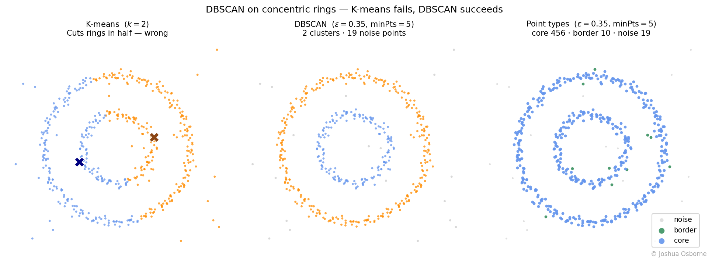
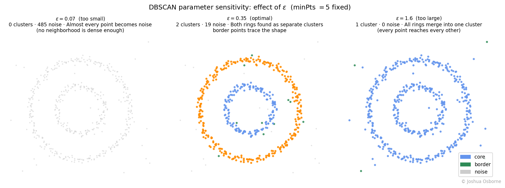

Statistics Notes
Density-based clustering with arbitrary shapes, automatic cluster count, and explicit noise labeling.
Contents
A density-based clustering algorithm that groups points by local density, finds clusters of arbitrary shape without a pre-specified count, and explicitly labels outliers as noise.
K-means defines a cluster as “all points closest to a given centroid.” That forces every cluster to be roughly spherical and similarly sized, and it requires specifying \(k\) before training. It also has no concept of noise. Every point, including obvious outliers, is forced into a cluster.
DBSCAN is improved upon this: a cluster is a dense region of points separated from other dense regions by sparse space. You do not need to know its shape or count in advance. You only need to define what “dense” means using two parameters: a neighborhood radius and a minimum points within a radius threshold.
This solves three problems K-means cannot handle:
The motivating real-world context is spatial data: geographic locations, sensor readings, astronomical objects.
DBSCAN partitions a dataset \(D\) of \(n\) points into clusters and noise using two user-supplied parameters: a radius \(\varepsilon\) and a density threshold \(\text{minPts}\).
The algorithm builds its clusters by expanding from high-density seed points via four cascading definitions. Each definition depends on the one before it.
A cluster \(C \subseteq D\) (this equation is saying that a cluster, \(C\), is a collection of points drawn from the full dataset, \(D\)) is a maximal set of density-connected points. Any point that belongs to no cluster is labeled noise.
| Symbol | Type | Meaning |
|---|---|---|
| \(D\) | set | full dataset of \(n\) points |
| \(n\) | integer | number of points in \(D\) |
| \(p, q, o\) | points | individual data points in \(D\) |
| \(\varepsilon\) | scalar \(> 0\) | neighborhood radius; controls what counts as “nearby” |
| \(\text{minPts}\) | integer \(\geq 1\) | minimum neighborhood size required to qualify as a core point |
| \(N_\varepsilon(p)\) | set | the \(\varepsilon\)-neighborhood of \(p\): all points within distance \(\varepsilon\) of \(p\) |
| \(\text{dist}(p, q)\) | scalar \(\geq 0\) | distance between \(p\) and \(q\); Euclidean by default |
| \(C_k\) | set | the \(k\)-th cluster, a subset of \(D\) |
DBSCAN has no loss function to minimize. Instead it is defined by four cascading geometric predicates, followed by an expansion algorithm that applies them.
Step 1: \(\varepsilon\)-neighborhood.
The neighborhood of a point is the set of all points within distance \(\varepsilon\):
\[N_\varepsilon(p) = \{q \in D \mid \text{dist}(p, q) \leq \varepsilon\}\]
Note that \(p \in N_\varepsilon(p)\) always, since \(\text{dist}(p, p) = 0\).
Step 2: Core point.
\(p\) is a core point if its neighborhood is dense enough to seed a cluster:
\[|N_\varepsilon(p)| \geq \text{minPts}\]
A non-core point can still belong to a cluster as a border point, or belong to no cluster at all as noise.
Border point.
\(p\) is a border point if it is not a core point but falls within \(\varepsilon\) of at least one core point:
\[|N_\varepsilon(p)| < \text{minPts} \quad \text{and} \quad \exists\, q \in D : p \in N_\varepsilon(q) \text{ and } |N_\varepsilon(q)| \geq \text{minPts}\]
Just to reiterate, the equation above is saying “p has too few neighbors to be a core point, but there exists some other point q that is a core point and that has p inside its neighborhood.”. Border points are assigned to the cluster of whichever core point first reaches them during expansion. If a border point lies within \(\varepsilon\) of core points from two different clusters, the assignment depends on processing order. This is the source of DBSCAN’s non-determinism (see Common Misconceptions).
Step 3: Directly density-reachable.
\(q\) is directly density-reachable from \(p\) when both conditions hold simultaneously:
Only a core point can be a source of direct density-reachability. A border point can be reached but cannot itself propagate the chain forward.
Step 4: Density-reachable.
\(q\) is density-reachable from \(p\) if there exists a finite chain of points \(p_1, p_2, \ldots, p_m\) such that:
\[p_1 = p, \quad p_m = q, \quad p_{i+1} \text{ is directly density-reachable from } p_i \text{ for all } i\]
NOTE: Density-reachability is not symmetric. If \(p\) is a core point and \(q\) is a border point, then \(q\) is density-reachable from \(p\), but \(p\) may not be density-reachable from \(q\). The asymmetry arises because a border point cannot propagate the chain. In simple words: a chain can only travel through core points. A border point can be the final destination of a chain but cannot be a stepping stone.
Step 5: Density-connected.
\(p\) and \(q\) are density-connected if there exists some point \(o\) such that both are density-reachable from \(o\):
\[\exists\, o \in D : p \text{ density-reachable from } o \;\wedge\; q \text{ density-reachable from } o\]
This equation is saying: there exists (\(\exists\)) some point \(o\) in the dataset (\(D\)) such that both \(p\) and \(q\) can be reached from it. Density-connectedness is symmetric by construction, because the shared source, \(o\), plays the role of the common ancestor.
Step 6: Cluster and noise.
A cluster \(C \subseteq D\) is a non-empty set satisfying two properties simultaneously:
Maximality: if \(p \in C\) and \(q\) is density-reachable from \(p\), then \(q \in C\)
Connectivity: every pair \(p, q \in C\) is density-connected
A point \(p\) is noise if it belongs to no cluster. It is neither a core point nor a border point.
Step 7: Algorithm procedure.
The algorithm iterates over all points, expanding new clusters from every freshly discovered core point:
Time complexity. \(O(n^2)\) with a brute-force distance matrix. With a spatial index (k-d tree or ball tree), each neighborhood query costs \(O(\log n)\), giving \(O(n \log n)\) overall.
Space complexity. \(O(n)\) for the spatial index and the visited/label arrays, regardless of the number of clusters found.
Setup. Eight 2D points labeled A–H, using \(\varepsilon = 2\) and \(\text{minPts} = 3\).
| Point | Coordinates |
|---|---|
| A | \((0, 0)\) |
| B | \((1, 0)\) |
| C | \((0, 1)\) |
| D | \((1, 1)\) |
| E | \((5, 5)\) |
| F | \((6, 5)\) |
| G | \((5, 6)\) |
| H | \((10, 0)\) |
Step 1: Compute \(N_\varepsilon\) for each point.
Within the first group: \(\text{dist}(A, B) = 1\), \(\text{dist}(A, C) = 1\), \(\text{dist}(A, D) = \sqrt{2} \approx 1.41\). All are \(\leq \varepsilon = 2\).
The nearest point outside {A,B,C,D} to any of them is E, with \(\text{dist}(A, E) = \sqrt{50} \approx 7.07 > 2\). The two groups are well-separated.
Within the second group: \(\text{dist}(E, F) = 1\), \(\text{dist}(E, G) = 1\), \(\text{dist}(F, G) = \sqrt{2} \approx 1.41\). All are \(\leq 2\).
Point H: the nearest other point is B with \(\text{dist}(H, B) = 9 > 2\). H has no neighbors.
| Point | \(N_\varepsilon\) | \(\lvert N_\varepsilon \rvert\) | Core? |
|---|---|---|---|
| A | {A, B, C, D} | 4 | yes |
| B | {A, B, C, D} | 4 | yes |
| C | {A, B, C, D} | 4 | yes |
| D | {A, B, C, D} | 4 | yes |
| E | {E, F, G} | 3 | yes |
| F | {E, F, G} | 3 | yes |
| G | {E, F, G} | 3 | yes |
| H | {H} | 1 | no |
Step 2: Expand clusters.
Start at A (unvisited, core). Create Cluster 1. Add {A, B, C, D} to the queue. Each of B, C, D is also a core point, but their neighborhoods add no new points beyond what is already queued. Cluster 1 = {A, B, C, D}.
Move to E (unvisited, core). Create Cluster 2. Add {E, F, G}. Each is a core point. No new points discovered. Cluster 2 = {E, F, G}.
Move to H (unvisited, not core). Tentatively noise. H is never reached from any core point. Noise = {H}.
Result.
| Assignment | Points |
|---|---|
| Cluster 1 | A, B, C, D |
| Cluster 2 | E, F, G |
| Noise | H |
Two clusters were found automatically. No \(k\) was specified.
Think of fire spreading through dry grass. A spark lands on a core point. The fire spreads to all points within \(\varepsilon\). At each newly reached point, if local density is high enough, the fire keeps spreading outward. It stops at border points: they ignite but do not spread further. Isolated points in sparse regions never catch.
This metaphor explains why DBSCAN handles complex shapes. The expansion follows the actual geometry of the data in a way that a centroid cannot.
Shape advantage over K-means. The figure below uses two concentric rings. K-means (left) has no concept of shape. DBSCAN (center) finds both rings as separate clusters by following the density structure. The right panel shows the same result colored by point type: ring points are overwhelmingly core points, the few border points sit at gap edges, and the scattered background points are labeled as noise.

Three limiting regimes to keep in mind:
The figure below shows all three ε regimes on the same ring dataset with minPts fixed at 5 (on that note: a minimum of three points is recommended).

What to read from the parameter figure: At \(\varepsilon = 0.07\) the neighborhood radius is too tight to bridge even adjacent ring points, so the algorithm sees 485 isolated noise points and finds no clusters. At \(\varepsilon = 0.35\) the radius comfortably connects ring neighbors, finds both rings as distinct clusters, and isolates the scattered background as noise. At \(\varepsilon = 1.60\) the radius bridges the gap between the two rings, merging everything into a single cluster with zero noise. The algorithm has lost the ability to distinguish inner from outer.
“DBSCAN is parameter-free.” DBSCAN requires both \(\varepsilon\) and \(\text{minPts}\). Neither has a universal default. A standard heuristic is to plot the sorted \(k\)-nearest-neighbor distances (with \(k = \text{minPts} - 1\)) and look for an elbow, but this is a guide, not an automatic rule.
“Border points are core points.” A border point lies within the \(\varepsilon\)-neighborhood of a core point but does not itself have enough neighbors to be a core point. It belongs to the cluster but cannot expand it further.
“DBSCAN always produces the same clusters.” The assignment of a border point that is reachable from two different clusters depends on processing order. That border point is assigned to whichever cluster reaches it first. Core points and noise are deterministic. Border points at cluster boundaries are not. In practice this rarely changes the result, but the guarantee of uniqueness does not exist.
“Noise means the point is unimportant.” Noise in DBSCAN means a point fell outside the \(\varepsilon\)-neighborhood of every core point. Noise points are often exactly the anomalies you are looking for, making DBSCAN a useful tool for outlier detection even when the cluster assignments are not the primary goal.
“DBSCAN works well in high dimensions.” As dimensionality grows, Euclidean distances concentrate around their mean and nearby and far-away points become nearly indistinguishable (see the curse of dimensionality. The \(\varepsilon\)-neighborhood from Step 1 degrades rapidly. Consider dimensionality reduction before applying DBSCAN to high-dimensional data.
K-means, HDBScan, Hierarchical clustering, C-means, bias-variance tradeoff, k-d tree, ball tree
Ester, M., Kriegel, H.-P., Sander, J., & Xu, X. (1996). A density-based algorithm for discovering clusters in large spatial databases with noise. Proceedings of the 2nd International Conference on Knowledge Discovery and Data Mining (KDD-96), 226–231. AAAI Press.
Schubert, E., Sander, J., Ester, M., Kriegel, H.-P., & Xu, X. (2017). DBSCAN revisited, revisited: Why and how you should (still) use DBSCAN. ACM Transactions on Database Systems, 42(3), 1–21.
sklearn documentation: https://scikit-learn.org/stable/modules/generated/sklearn.cluster.DBSCAN.html
StatQuest video: https://www.youtube.com/watch?v=RDZUdRSDOok&pp=ygUQc3RhdHF1ZXN0IGRic2Nhbg%3D%3D